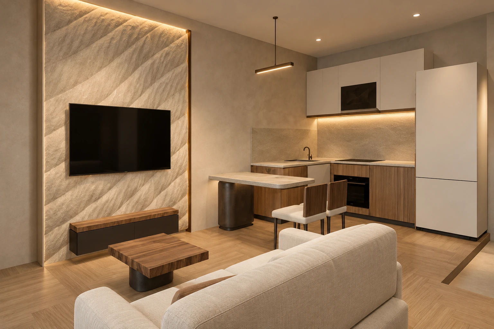
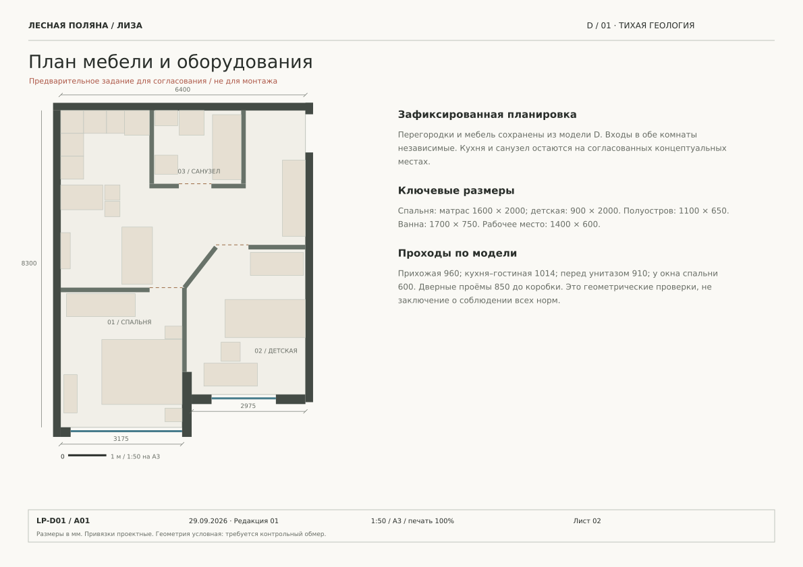

04 / ВТОРАЯ КОМНАТА
Мягкая архитектура.
Арка повторяет общий язык дуг в спокойном масштабе. Кровать 900 × 2000 мм, полноценный стол и встроенное хранение поддерживают повседневную жизнь.

Квартира Лизы · интерьерный проект
Тактильный камень.
Тёплое дерево. Свет по касательной.
Встроенные деревянные плоскости собирают хранение, кухню и изголовье. На их фоне остаются несколько выразительных фрагментов камня — и свет, который раскрывает их объём.
Камерная квартира, в которой у каждой детали есть причина. Полуостров продолжает кухонную жизнь. Низкая мебель сохраняет воздух. Рельефный серп делает спальню личной, а тихие фасады возвращают пространству спокойствие.
Компактный полуостров 1100 × 650 мм работает как стол и дополнительная поверхность. Скруглённая опора оставляет пространство для ног. Одна линейная лампа удерживает композицию.
Каменная медиастена становится фоном для тонкой консоли. Дерево возвращается в столике с живым краем; мягкий диван снижает общий горизонт.
Рассмотреть эту комнату в 3DОдин жест вместо множества украшений.
Рельефный серп объединён с деревянной стеной и мягким изголовьем. Полки, локальная лампа и скрытый свет становятся частью этой конструкции. Лён и приглушённая олива смягчают минерал.
Открыть спальню в 3D04 / ВТОРАЯ КОМНАТА
Арка повторяет общий язык дуг в спокойном масштабе. Кровать 900 × 2000 мм, полноценный стол и встроенное хранение поддерживают повседневную жизнь.
05 / САНУЗЕЛ
Тёмные крупные плоскости, деревянная консоль и бронза. Свет вокруг зеркала раскрывает фактуру, а доступ к хранению и технике остаётся удобным.
Палитра передаёт замысел. Реальные образцы, артикулы и бюджет согласуются перед заказом.
Вариант D и дизайн 01 зафиксированы. Существующая планировочная логика сохранена: две комнаты у окон, компактная общая зона и центральный санузел.
Открыть интерактивную модельПять планировок с гардеробной →Вариант I · 3D гардеробная
27 страниц: визуализации и 22 технических листа. Планы, точки подключения, группы освещения, развёртки и ведомости собраны в одну систему.
Лучше один сильный архитектурный приём,
чем десять декоративных.